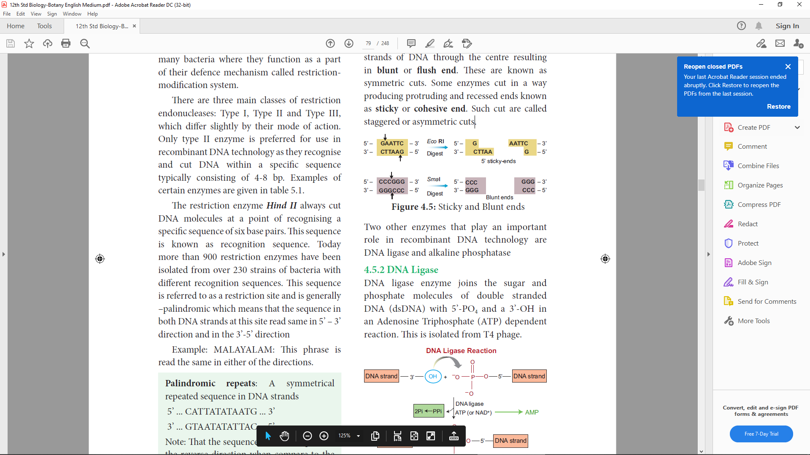
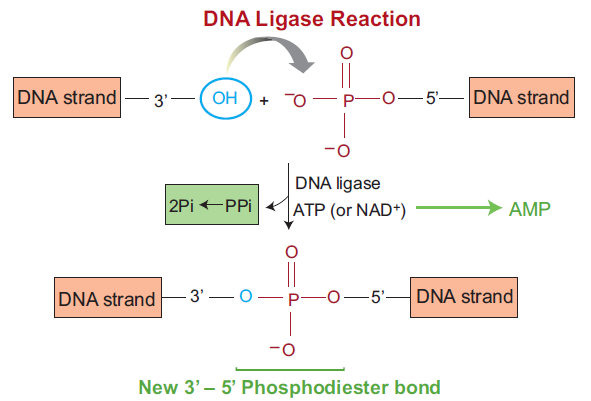
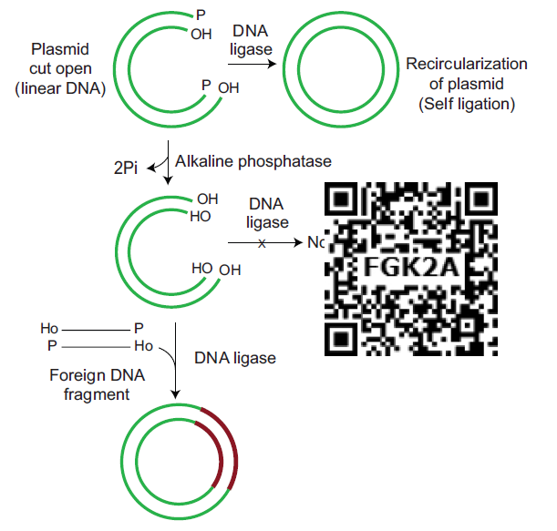
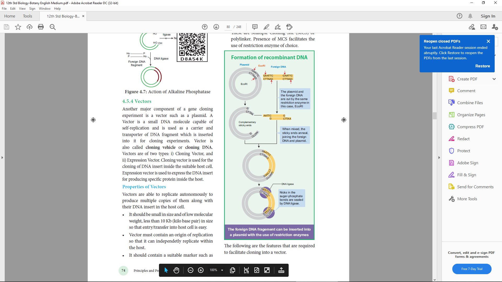
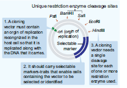
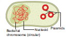
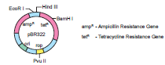
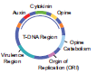
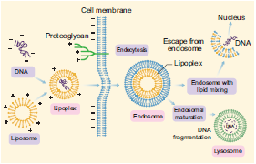

The steps involved in recombinant DNA technology are:
Isolation of a DNA fragment containing a gene of interest that needs to be cloned. This is called an insert.
PCR:
Polymerase Chain Reaction is a common laboratory technique used to make copies OPEN BRACKET millions CLOSE BRACKET of a particular region of DNA.
Generation of recombinant DNA OPEN BRACKET rDNA CLOSE BRACKET molecule by insertion of the DNA fragment into a carrier molecule called a vector that can self-replicate within the host cell.
Selection of the transformed host cells is carrying the rDNA and allowing them to multiply thereby multiplying the Rdna molecule.
The entire process thus generates either a large amount of rDNA or a large amount of protein expressed by the insert.
Wherever vectors are not involved the desired gene is multiplied by PCR technique. The multiple
copies are injected into the host cell protoplast or it is shot into the host cell protoplast by shot gun method.
In order to generate recombinant DNA molecule, certain basic tools are necessary. The basic tools
are enzymes, vectors and host organisms. The most important enzymes required for genetic
engineering are the restriction enzymes, DNA ligase and alkaline phosphatase.
Restriction enzyme |
Microbial source |
Recognition sequence |
Fragments |
Alu I |
Arthrobacter luteus |
5’AG SLASH CT3’ 3’TCSLASHGA5’ |
A-G C-T Blunt
T-C G-A ends
|
BamHI |
Bacillus amyloliquefaciens |
5’GSLASHGATCC3’ 3’CCTAGSLASHG5’ |
G G-A-T-C-C Sticky
C-C-T-A-G G ends
|
EcoRI |
Escherichia coli |
5’GSLASHAATTC3’ 3’CCTAGSLASHG5’ |
G A-A-T-T-C Sticky C-T-T-A-A G ends
|
HaeIII |
Haemophilus aegyptus |
5’GGSLASHCC3’ 3’CCSLASHGG5 |
G-G C-C Blunt
C-C G-G ends
|
HindIII |
Haemophilus influenza |
5’ASLASHAGCTT3’ 3’TTCGASLASHA5’ |
A A-G-C-T-T Sticky
T-T-C-G-A A ends
|
Table 4.1: Type II restriction enzyme with source, recognition and cleavage site
The two enzymes responsible for restricting the growth of bacteriophage in Escherichia coli were isolated in the year 1963. One was the enzyme which added methyl groups to DNA, while the other cut DNA. The latter was called restriction endonuclease. A restriction enzyme or restriction endonuclease is an enzyme that cleaves DNA into fragments at or near specific recognition sites within the molecule known as restriction sites. Based on their mode of action restriction enzymes are classified into Exonucleases and Endonucleases.
a. Exonucleases are enzymes which remove nucleotides one at a time from the end of a DNA molecule. Example, Bal 31, Exonuclease 3.
b. Endonucleases are enzymes which break the internal phosphodiester bonds within a DNA molecule. Example, Hind 2, EcoRI, Pvul, BamHI, TaqI.
Restriction endonucleases: Molecular scissors
The restriction enzymes are called as molecular scissors. These act as foundation of recombinant DNA technology. These enzymes exist in many bacteria where they function as a part of their defence mechanism called restrictionmodification system.
There are three main classes of restriction endonucleases: Type 1, Type 2 and Type 3, which differ slightly by their mode of action. Only type II enzyme is preferred for use in recombinant DNA technology as they recognise and cut DNA within a specific sequence typically consisting of 4-8 bp. Examples of certain enzymes are given in table 5.1.
The restriction enzyme Hind II always cut DNA molecules at a point of recognising a specific sequence of six base pairs. This sequence is known as recognition sequence. Today more than 900 restriction enzymes have been isolated from over 230 strains of bacteria with different recognition sequences. This sequence is referred to as a restriction site and is generally –palindromic which means that the sequence in both DNA strands at this site read same in 5’ to 3’ direction and in the 3’-5’ direction
Example: MALAYALAM: This phrase is read the same in either of the directions.
Palindromic repeats:
A symmetrical repeated sequence in DNA strands
5’ ... CATTATATAATG ... 3’
3’ ... GTAATATATTAC ... 5’
Note: That the sequence of the base pairs in the reverse direction when compare to the first sequence.

Figure 4.4: Sticky and Blunt ends
Restriction endonucleases are named by a standard procedure. The first letter of the enzymes indicates the genus name, followed by the first two letters of the species, then comes the strain of the organism and finally a roman numeral indicating the order of discovery. For example, EcoRI is from Escherichia OPEN BRACKET E CLOSE BRACKET coli OPEN BRACKET co CLOSE BRACKET, strain RY 13 OPEN BRACKET R CLOSE BRACKET and first endonuclease OPEN BRACKET I CLOSE BRACKET to be discovered.
The exact kind of cleavage produced by a restriction enzyme is important in the design of a gene cloning experiment. Some cleave both strands of DNA through the centre resulting in blunt or flush end. These are known as symmetric cuts. Some enzymes cut in a way producing protruding and recessed ends known as sticky or cohesive end. Such cut are called staggered or asymmetric cuts.Two other enzymes that play an important role in recombinant DNA technology are DNA ligase and alkaline phosphatase
DNA ligase enzyme joins the sugar and phosphate molecules of double stranded DNA OPEN BRACKET dsDNA CLOSE BRACKET with 5’-PO4 and a 3’-OH in an Adenosine Triphosphate OPEN BRACKET ATP CLOSE BRACKET dependent reaction. This is isolated from T4 phage.

Figure 4.5: DNA ligase reaction
It is a DNA modifying enzyme and adds or removes specific phosphate group at 5’ terminus of double stranded DNA OPEN BRACKET dsDNA CLOSE BRACKET or single stranded DNA OPEN BRACKET ssDNA CLOSE BRACKET or RNA. Thus it prevents self ligation. This enzyme is purified from bacteria and calf intestine.

Figure 4.6: Action of Alkaline Phosphatase

Another major component of a gene cloning experiment is a vector such as a plasmid. A Vector is a small DNA molecule capable of self-replication and is used as a carrier and transporter of DNA fragment which is inserted into it for cloning experiments. Vector is also called cloning vehicle or cloning DNA. Vectors are of two types: i CLOSE BRACKET Cloning Vector, and ii CLOSE BRACKET Expression Vector. Cloning vector is used for the cloning of DNA insert inside the suitable host cell. Expression vector is used to express the DNA insert for producing specific protein inside the host.
Vectors are able to replicate autonomously to produce multiple copies of them along with their DNA insert in the host cell.
It should be small in size and of low molecular weight, less than 10 Kb OPEN BRACKET kilo base pair CLOSE BRACKET in size so that entrySLASHtransfer into host cell is easy.
Vector must contain an origin of replication so that it can independetly replicate within the host.
It should contain a suitable marker such as antibiotic resistance, to permit its detection in transformed host cell.
Vector should have unique target sites for integration with DNA insert and should have the ability to integrate with DNA insert it carries into the genome of the host cell. Most of the commonly used cloning vectors have more than one restriction site. These are Multiple Cloning Site OPEN BRACKET MCS CLOSE BRACKET or polylinker. Presence of MCS facilitates the use of restriction enzyme of choice.
The following are the features that are required to facilitate cloning into a vector.

Figure 4.7: Properties of Vector
This is a sequence from where replication starts and piece of DNA when linked to this sequence
can be made to replicate within the host cells.
In addition to ori the vector requires a selectable marker, which helps in identifying and eliminating non transformants and selectively permitting the growth of the transformants.
In order to link the alien DNA, the vector needs to have very few, preferably single, recognition
sites for the commonly used restriction enzymes.
Few types of vectors are discussed in detail below:

Figure 4.8: Bacterial chromosome and plasmids
Plasmids are extra chromosomal , self replicating ds circular DNA molecules, found in the bacterial
cells in addition to the bacterial chromosome. Plasmids contain Genetic information for their own replication.
pBR 322 plasmid is a reconstructed plasmid and most widely used as cloning vector; it contains 4361 base pairs. In pBR, p denotes plasmid, Band R respectively the names of scientist Boliver and Rodriguez who developed this plasmid. The number 322 is the number of plasmid developed from their laboratory. It contains ampR and tetR two different antibiotic resistance genes and recognition sites for several restriction enzymes. OPEN BRACKET Hind 3, EcoRI, BamH 1, Sal 1, Pvu 2, Pst 1, Cla 1 CLOSE BRACKET, ori and antibiotic resistance genes. Rop codes for the proteins involved in the replication of the plasmid.

Figure 4.9: pBR 322
Ti Plasmid Bacteria
Ti plasmid is found in Agrobacterium tumefaciens, a bacteria responsible for inducing tumours in several dicot plants. The plasmid carries transfer OPEN BRACKET tra CLOSE BRACKET gene which help to transfer T- DNA from one bacterium to other bacterial or plant cell. It has Onc gene for oncogenecity, ori gene for origin for replication and inc gene for incompatibility. T-DNA of Ti-Plasmid is stably integrated with plant DNA. Agrobacterium plasmids have been used for introduction of genes of desirable traits into plants.

Figure 4.10: Ti Plasmid
The propagation of the recombinant DNA molecules must occur inside a living system or host. Many types of host cells are available for gene cloning which includes E.coli, yeast, animal or plant cells. The type of host cell depends upon the cloning experiment. E.coli is the most widely used organism as its genetic make-up has been extensively studied, it is easy to handle and grow, can accept a range of vectors and has also been studied for safety. One more important feature of E.coli to be preferred as a host cell is that under optimal growing conditions the cells divide every 20 minutes.
Since the DNA is a hydrophilic molecule,it cannot pass through cell membranes, In order to force bacteria to take up the plasmid, the bacterial cells must first be made competent to take up DNA. This is done by treating them with a specific concentration of a divalent cation such as calcium. Recombinant DNA can then be forced into such cells by incubating the cells with recombinant DNA on ice, followed by placing them briefly at 420C OPEN BRACKET heatshock CLOSE BRACKET and then putting them back on ice. This enables bacteria to take up the Recombinant DNA.
For the expression of eukaryotic proteins, eukaryotic cells are preferred because to produce a functionally active protein it should fold properly and post translational modifications should also occur, which is not possible by prokaryotic cell OPEN BRACKET E.coli CLOSE BRACKET.
The next step after a recombinant DNA molecule has been generated is to introduce it into a suitable host cell. There are many methods to introduce recombinant vectors and these are dependent on several factors such as the vector type and host cell. For achieving genetic transformation in plants, the basic pre-requisite is the construction of a vector which carries the gene of interest flanked by the necessary controlling sequences, that is, the promoter and terminator, and deliver the genes into the host plant. There are two kinds of gene transfer methods in plants. It includes:
Direct or vectorless gene transfer
Indirect or vector – mediated gene transfer

Figure 4.11: Liposome mediated method of Gene Transfer
In the direct gene transfer methods, the foreign gene of interest is delivered into the host plant
without the help of a vector. The following are some of the common methods of direct gene
transfer in plants.
Certain chemicals like polyethylene glycol OPEN BRACKET PEG CLOSE BRACKET and dextran sulphate induce DNA uptake into plant protoplasts.
The DNA is directly injected into the nucleus using fine tipped glass needle or micro pipette to transform plant cells. The protoplasts are immobilised on a solid support OPEN BRACKET agarose on a microscopic slide CLOSE BRACKET or held with a holding pipette under suction.
A pulse of high voltage is applied to protoplasts, cells or tissues which makes transient pores in the plasma membrane through which uptake of foreign DNA occurs.